| A | B | C | D | E | F | G | H | I | J | K | L | M | N | O | P | Q | R | S | T | U | V | W | X | |
|---|---|---|---|---|---|---|---|---|---|---|---|---|---|---|---|---|---|---|---|---|---|---|---|---|
1 | # | Código | Categoría | Título | Descripción | Dimensiones | Specs clave | PVP estimado (€) | Confianza precio | Página catálogo | Imagen | Footprint uso m² * | Altura mín m * | Espacio ok | Plegable | Ruido | Objetivos | Grupos musculares | Impacto articular | Nivel recomendado | Intensidad soportada * | Peso máx usuario (kg) | Rol en setup | Combina con |
2 | 1 | G799 | Cardio - Cinta de correr | SK Line G799 Treadmill | Cinta de correr SK Line con motor silencioso, sistema de amortiguación multipunto y programas integrados. Línea ligera ideal para uso doméstico intensivo. | 200 x 85 x 140 cm aprox. | Motor AC ~3HP · Velocidad 0-20 km/h · Inclinación 0-15% · 25 programas · Monitor DOT MATRIX o Smart Focus táctil · Bluetooth/USB | 1,850 € | Media | 16 | 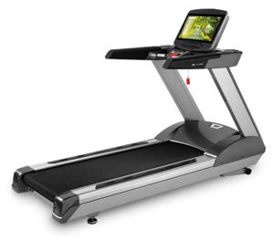 | 3.5 | 2.2 | habitación/garaje/salón | No | Medio | pérdida peso | salud general | funcional | tren inferior | cardiovascular | Alto | Princ/Interm/Avanz | Doméstica intensiva | 150 | Esencial cardio | R250, H945BM, VF97660 |
3 | 2 | G930 | Cardio - Elíptica | SK Line G930 Elíptica | Elíptica con bastones móviles para entrenamiento de tren superior e inferior. Transmisión por correa silenciosa. | 200 x 70 x 165 cm aprox. | 25 niveles de resistencia · 24 programas · Zancada ~50 cm · Virtual Active · TV/Internet opcional | 1,500 € | Media | 16 | 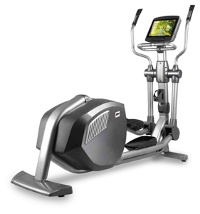 | 3 | 2.3 | habitación/garaje/salón | No | Bajo | pérdida peso | salud general | funcional | tren inferior+superior | cardiovascular | Bajo | Princ/Interm/Avanz | Doméstica intensiva | 150 | Complementario | H895, PL090 |
4 | 3 | H800 | Cardio - Bici vertical | SK Line H800 Upright Bike | Bicicleta vertical con sillín ergonómico y pedales autonivelantes. Monitor con programas integrados. | 120 x 60 x 140 cm aprox. | 25 niveles · 24 programas · Virtual Active · Bluetooth · Peso máx. usuario 150 kg | 1,350 € | Media | 17 | 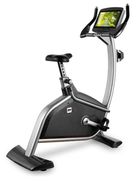 | 1.5 | 1.5 | habitación/salón | No | Bajo | pérdida peso | salud general | tren inferior | cardiovascular | Bajo | Princ/Interm | Doméstica intensiva | 150 | Complementario | PL090, IR97510 |
5 | 4 | H895 | Cardio - Bici reclinada | SK Line H895 Recumbent Bike | Bicicleta reclinada con asiento ajustable y respaldo lumbar. Acceso fácil, ideal para rehabilitación o usuarios seniors. | 160 x 65 x 130 cm aprox. | 25 niveles · 24 programas · Asiento regulable · Virtual Active | 1,550 € | Media | 17 | 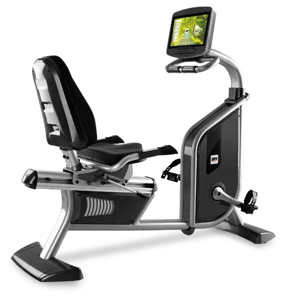 | 2.2 | 1.4 | habitación/salón | No | Bajo | rehabilitación | salud general | pérdida peso | tren inferior | cardiovascular | Bajo | Princ/Interm | Doméstica intensiva | 150 | Complementario | PL070, VF97660 |
6 | 5 | R250 | Cardio - Remo | SK Line R250 Rower | Remo con transmisión por correa y resistencia electromagnética. Plegable para ahorro de espacio. | 215 x 55 x 90 cm aprox. | 10 niveles de resistencia · Monitor LED/Smart Focus · Plegable | 1,350 € | Media | 18 | 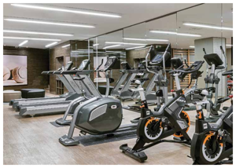 | 3 | 1.2 | habitación/garaje/salón | Sí | Bajo | pérdida peso | funcional | salud general | full-body | cardiovascular | Bajo | Princ/Interm/Avanz | Doméstica intensiva | 140 | Complementario | G799, VF97660 |
7 | 6 | G620 | Cardio - Cinta de correr | LK Line G620 Treadmill | Cinta de correr línea LK con amortiguación Pro-Tonic 10 puntos. Cubierta fenólica HST de bajo mantenimiento. | 205 x 84 x 142 cm | Motor AC · 0-22 km/h · Inclinación 0-15% · 24 programas · Virtual Active | 2,650 € | Media | 20 | 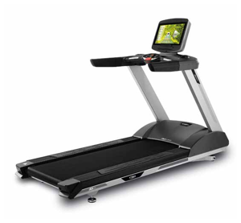 | 3.8 | 2.3 | garaje/salón | No | Medio | pérdida peso | salud general | funcional | tren inferior | cardiovascular | Alto | Princ/Interm/Avanz | Semi-pro | 160 | Esencial cardio | R900, H945BM |
8 | 7 | G815 | Cardio - Elíptica | LK Line G815 Elíptica | Elíptica LK con bastones móviles, volante frontal y transmisión por correa. | 200 x 70 x 165 cm aprox. | 25 niveles · 24 programas · Virtual Active · TV/Internet opcional | 2,050 € | Media | 21 | 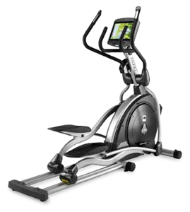 | 3.2 | 2.3 | garaje/salón | No | Bajo | pérdida peso | salud general | funcional | tren inferior+superior | cardiovascular | Bajo | Princ/Interm/Avanz | Semi-pro | 150 | Complementario | H775, PL090 |
9 | 8 | H720 | Cardio - Bici vertical | LK Line H720 Upright Bike | Bici vertical de cuadro abierto para acceso fácil. Resistencia electromagnética. | 120 x 60 x 140 cm aprox. | 25 niveles · 24 programas · Virtual Active | 1,650 € | Media | 22 | 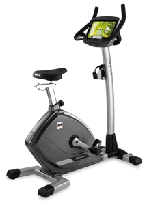 | 1.6 | 1.5 | habitación/salón | No | Bajo | pérdida peso | salud general | tren inferior | cardiovascular | Bajo | Princ/Interm | Semi-pro | 150 | Complementario | PL090 |
10 | 9 | H775 | Cardio - Bici reclinada | LK Line H775 Recumbent Bike | Bici reclinada LK con asiento ajustable, respaldo y pedales sobredimensionados. | 160 x 65 x 130 cm aprox. | 25 niveles · 24 programas · Peso máx. usuario 150 kg | 1,850 € | Media | 23 | 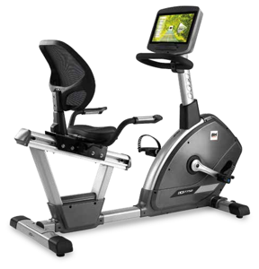 | 2.3 | 1.4 | habitación/salón | No | Bajo | rehabilitación | salud general | pérdida peso | tren inferior | cardiovascular | Bajo | Princ/Interm | Semi-pro | 150 | Complementario | PL070 |
11 | 10 | R900 | Cardio - Remo | LK Line R900 Rower | Remo con motor AC 2CV, 20 niveles de resistencia y monitor LED. | 215 x 55 x 90 cm aprox. | 20 niveles · 20 programas · Monitor LED | 1,900 € | Media | 23 | 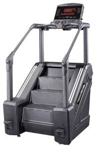 | 3 | 1.2 | habitación/garaje/salón | Sí | Bajo | pérdida peso | funcional | full-body | cardiovascular | Bajo | Princ/Interm/Avanz | Semi-pro | 140 | Complementario | G620 |
12 | 11 | H945BM | Ciclo indoor | H945BM Indoor Bike | Bicicleta de ciclo indoor con freno magnético y volante de inercia equivalente a 20 kg. Estructura reforzada. | 120 x 55 x 115 cm aprox. | 16 niveles freno magnético · Volante ~20 kg · Bluetooth/ANT+ · Doble portabotellas | 1,250 € | Media | 31 | 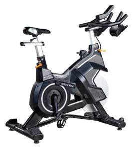 | 1.4 | 1.3 | habitación/garaje/salón | No | Bajo | pérdida peso | salud general | tren inferior | cardiovascular | Bajo | Interm/Avanz | Doméstica intensiva | 130 | Complementario | VF97660 |
13 | 12 | H925 | Ciclo indoor | H925 Duke Magnetica | Bicicleta indoor con resistencia magnética para uso doméstico y semi-profesional. Manillar multiposición. | 115 x 55 x 115 cm aprox. | Freno magnético · Volante ~18 kg · Ajustes aluminio | 850 € | Media | 33 | 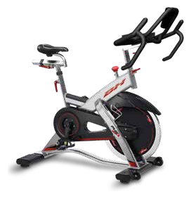 | 1.4 | 1.3 | habitación/garaje/salón | No | Bajo | pérdida peso | salud general | tren inferior | cardiovascular | Bajo | Princ/Interm | Doméstica intensiva | 130 | Complementario | VF97660 |
14 | 13 | H921 | Ciclo indoor | H921 Indoor Bike | Indoor bike compacta con transmisión por correa, ajustes verticales y horizontales. | 115 x 55 x 115 cm aprox. | Freno por fricción/magnético · Volante ~18 kg | 720 € | Media | 33 | 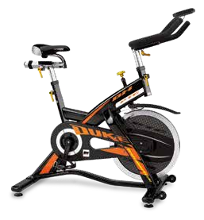 | 1.4 | 1.3 | habitación/garaje/salón | No | Bajo | pérdida peso | salud general | tren inferior | cardiovascular | Bajo | Princ/Interm | Doméstica ligera | 120 | Complementario | VF97660 |
15 | 14 | H920 | Ciclo indoor | H920 Indoor Bike | Modelo de entrada de la gama indoor: compacta, sencilla y robusta. | 115 x 55 x 115 cm aprox. | Freno por fricción · Volante ~18 kg | 620 € | Media | 33 | 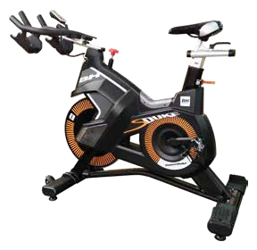 | 1.4 | 1.3 | habitación/garaje/salón | No | Bajo | pérdida peso | salud general | tren inferior | cardiovascular | Bajo | Princ | Doméstica ligera | 120 | Entry cardio | VF97660 |
16 | 15 | PL070 | Peso libre - Banco | PL070 Banco Plano | Banco plano olímpico robusto para press de banca. Estructura reforzada. | 140 x 65 x 45 cm aprox. | Acolchado firme · Acero reforzado | 2,050 € | Alta | 83 | 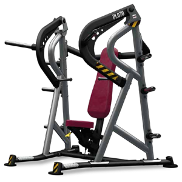 | 2 | 0.6 | cualquiera | No | Bajo | ganancia muscular | pecho | hombro | tríceps | Medio | Princ/Interm/Avanz | Doméstica intensiva | 300 | Esencial fuerza | PL130, IR92304S, IR91054A |
17 | 16 | PL090 | Peso libre - Banco | PL090 Banco Regulable | Banco multiposición regulable: plano, inclinado, declinado y asiento. | 140 x 65 x 50-120 cm | Respaldo ajustable multi-ángulo · Acolchado reforzado | 1,900 € | Alta | 83 | 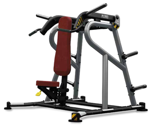 | 2.2 | 1.3 | cualquiera | No | Bajo | ganancia muscular | salud general | full-body (banco multi) | Medio | Princ/Interm/Avanz | Doméstica intensiva | 300 | Esencial fuerza | IR92316, PL700 |
18 | 17 | PL130 | Peso libre - Banco | PL130 Banco Olímpico Inclinado | Banco olímpico con soportes para barra olímpica, inclinado fijo. | 170 x 120 x 130 cm aprox. | Soportes regulables · Respaldo inclinado | 1,250 € | Alta | 84 | 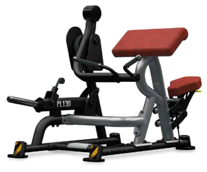 | 3.5 | 2 | garaje/local | No | Alto | ganancia muscular | pecho (inclinado) | hombro | Medio | Interm/Avanz | Semi-pro | 400 | Complementario | IR92304S, IR91054A |
19 | 18 | PL150 | Peso libre - Banco | PL150 Banco Olímpico Plano | Banco olímpico plano con soportes integrados para barra olímpica. | 170 x 120 x 120 cm aprox. | Soportes integrados · Base amplia | 1,870 € | Alta | 84 | 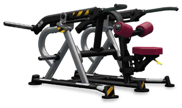 | 3.5 | 1.8 | garaje/local | No | Alto | ganancia muscular | pecho (plano) | tríceps | Medio | Interm/Avanz | Semi-pro | 400 | Esencial fuerza | IR92304S, IR91054A |
20 | 19 | PL110 | Peso libre - Banco | PL110 Banco Olímpico Declinado | Banco olímpico declinado para trabajo de pectoral inferior. | 170 x 120 x 120 cm aprox. | Declinado fijo · Soportes olímpicos | 2,320 € | Alta | 85 | 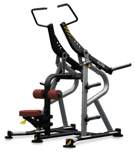 | 3.5 | 1.8 | garaje/local | No | Alto | ganancia muscular | pecho inferior | Medio | Interm/Avanz | Semi-pro | 400 | Complementario | IR91054A |
21 | 20 | PL300 | Peso libre - Banco | PL300 Banco Scott (Curl) | Banco predicador/Scott para curl de bíceps aislado. | 100 x 70 x 90 cm aprox. | Apoyo acolchado · Soporte de barra | 1,400 € | Alta | 85 | 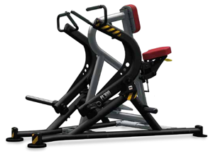 | 1.5 | 1.2 | cualquiera | No | Bajo | ganancia muscular | bíceps | Bajo | Princ/Interm/Avanz | Doméstica intensiva | 200 | Complementario | IR92304S |
22 | 21 | PL170 | Peso libre - Banco | PL170 Banco Abdominales | Banco de abdominales regulable con rodillos acolchados. | 150 x 60 x 80 cm aprox. | Inclinación regulable · Rodillos acolchados | 800 € | Alta | 86 | 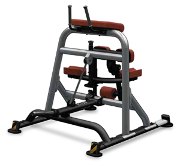 | 1.8 | 1 | cualquiera | No | Bajo | ganancia muscular | salud general | abdomen | core | Bajo | Princ/Interm | Doméstica intensiva | 150 | Complementario | IR97510 |
23 | 22 | PL700 | Peso libre - Rack | PL700 Squat Rack / Half Rack | Jaula de sentadillas de media altura con soportes ajustables y barras de seguridad. | 140 x 120 x 215 cm aprox. | Soportes en J · Barras de seguridad · Estructura reforzada | 2,100 € | Alta | 87 | 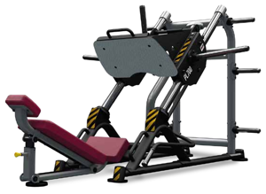 | 4 | 2.3 | garaje/local | No | Alto | ganancia muscular | funcional | full-body (squat, press, dominadas) | Medio | Interm/Avanz | Semi-pro | 300 | Esencial fuerza | PL090, IR92304S, IR91054A |
24 | 23 | PL210 | Peso libre - Banco | PL210 Banco Multifunción | Banco multifunción con extensión de piernas y curl para entrenamiento completo. | 180 x 80 x 110 cm aprox. | Extensión piernas · Curl · Respaldo ajustable | 850 € | Alta | 88 | 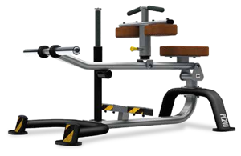 | 3 | 1.5 | garaje/local | No | Medio | ganancia muscular | pierna (ext/curl) | core | Medio | Princ/Interm | Doméstica intensiva | 200 | Complementario | PL090 |
25 | 24 | PL340 | Peso libre - Banco | PL340 Hip Thrust Bench | Banco específico para hip thrust con acolchado lumbar y soporte de barra. | 130 x 90 x 55 cm aprox. | Acolchado ergonómico · Soporte barra olímpica | 950 € | Alta | 88 | 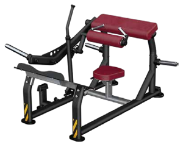 | 2 | 0.8 | cualquiera | No | Medio | ganancia muscular | glúteo | cadera | Bajo | Princ/Interm/Avanz | Doméstica intensiva | 300 | Complementario | IR91054A |
26 | 25 | PL400 | Peso libre - Rack | PL400 Jaula Guiada / Smith | Multi-estación tipo Smith guiada con poleas y soportes. | 200 x 150 x 220 cm aprox. | Barra guiada · Poleas altas/bajas · Pin de seguridad | 1,850 € | Media | 89 | 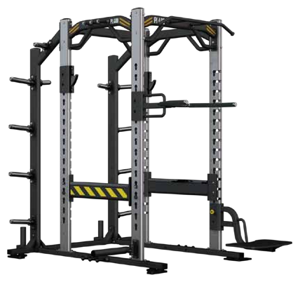 | 5 | 2.3 | garaje/local | No | Medio | ganancia muscular | salud general | full-body guiado | Medio | Princ/Interm | Semi-pro | 200 | Esencial fuerza | PL090, IR91054A |
27 | 26 | IT7022 | Almacenamiento | IT7022 Rack Mancuernas | Rack pequeño para almacenamiento ordenado de mancuernas hexagonales. | 120 x 50 x 80 cm aprox. | 2 niveles · Capacidad ~10 pares | 340 € | Media | 97 | 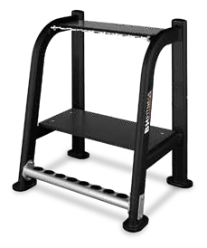 | 1.5 | 1.2 | cualquiera | No | Bajo | — | — | — | — | Doméstica intensiva | Almacenamiento | IR92316 | |
28 | 27 | IR1303B | Almacenamiento | IR1303B Rack 10 Barras | Rack vertical para almacenamiento de hasta 10 barras olímpicas. | 60 x 60 x 90 cm aprox. | Capacidad 10 barras · Acero reforzado | 410 € | Media | 107 | 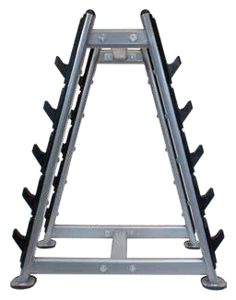 | 0.8 | 1 | cualquiera | No | Bajo | — | — | — | — | Doméstica intensiva | Almacenamiento | IR92304S | |
29 | 28 | IR92316 | Peso libre - Mancuernas | IR92316 Mancuernas Decagonales | Set de mancuernas decagonales de acero con agarre moleteado. Diseño anti-rodadura. | Variable por peso | Pares disponibles 2.5-50 kg · Acero macizo · Logo grabado | 990 € | Baja | 109 | 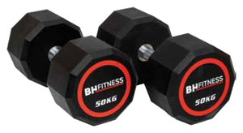 | 0.4 | cualquiera | — | Bajo | ganancia muscular | funcional | full-body | Medio | Princ/Interm/Avanz | Doméstica intensiva | Esencial peso libre | PL090, IT7022 | ||
30 | 29 | IR92304S | Peso libre - Barras | IR92304S Barra Z (EZ) con peso | Set de 5 barras EZ con peso integrado: 10, 20, 30, 40 y 50 kg. | Barra ~120 cm | Set de 5 barras · Peso integrado · Agarre moleteado | 790 € | Baja | 110 | 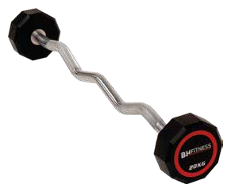 | 0.6 | cualquiera | — | Medio | ganancia muscular | full-body (EZ bar) | Medio | Princ/Interm/Avanz | Doméstica intensiva | Complementario | PL700, IR91054A | ||
31 | 30 | IR91054A | Peso libre - Discos | IR91054A Set de Discos Olímpicos | Set de 10 discos olímpicos: 2x5, 2x10, 2x15, 2x20, 2x25 kg (150 kg total). | Diámetro 45 cm | Discos bumper/hierro · 150 kg totales | 650 € | Media | 110 | 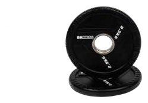 | 0.8 | garaje/local | — | Alto | ganancia muscular | full-body | Medio | Princ/Interm/Avanz | Doméstica intensiva | Esencial fuerza | PL700, IR92304S | ||
32 | 32 | IR97801B | Funcional - Balones | IR97801B Set Balones Medicinales | Set de 5 balones medicinales con agarre: 2, 4, 6, 8, 10 kg. | ~30 cm diámetro | Set 5 balones · Agarre doble · Goma resistente | 290 € | Media | 113 | 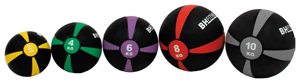 | 0.3 | cualquiera | — | Medio | funcional | pérdida peso | core | full-body | Medio | Princ/Interm/Avanz | Doméstica intensiva | Complementario | IR97317 | ||
33 | 33 | IR97510 | Funcional | IR97510 Tapete de Yoga | Tapete de yoga/fitness antideslizante. | 183 x 61 x 0.6 cm | PVC antideslizante | 30 € | Alta | 115 | 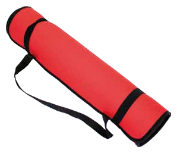 | 1.2 | cualquiera | Sí | Bajo | salud general | rehabilitación | funcional | core | flexibilidad | Bajo | Princ/Interm/Avanz | Doméstica intensiva | Accesorio | VF97660, IR97422 | ||
34 | 34 | IR97317 | Funcional - Step | IR97317 Step Ajustable | Step ajustable en 3 alturas para clases colectivas o entrenamiento en casa. | 80 x 31 cm | Alturas 10/15/20 cm · Superficie antideslizante | 80 € | Alta | 115 | 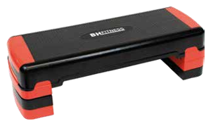 | 0.4 | 0.3 | cualquiera | No | Medio | pérdida peso | funcional | tren inferior | cardiovascular | Medio | Princ/Interm | Doméstica intensiva | 150 | Complementario | IR92007H |
35 | 35 | IR95104 | Funcional | IR95104 Cuerda de Batalla | Battle rope de 9 metros, alta resistencia a la tracción. | 9 m largo | Largo 9 m · Diámetro ~38 mm · Poliéster reforzado | 75 € | Alta | 115 | 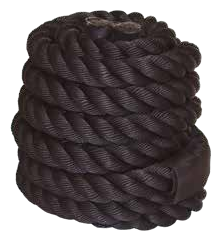 | 1 | garaje/local/exterior | Sí | Medio | funcional | pérdida peso | hombro | core | cardiovascular | Bajo | Princ/Interm/Avanz | Doméstica intensiva | Complementario | IR92007H | ||
36 | 36 | VF97660 | Funcional | VF97660 Set Ligas de Resistencia | Set de bandas elásticas de resistencia para entrenamiento funcional. | Varios largos | Set multi-resistencia · Látex | 28 € | Alta | 116 | 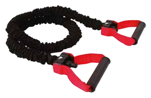 | 0.2 | cualquiera | Sí | Bajo | funcional | rehabilitación | salud general | full-body | Bajo | Princ/Interm/Avanz | Doméstica intensiva | Accesorio | IR97510, IR97422 | ||
37 | 37 | IR97422 | Funcional - Balance | IR97422 Balance Dome (BOSU) | Semiesfera de equilibrio para entrenamiento de core, propiocepción y estabilidad. | Ø 65 cm | Peso 7.5 kg · Máx usuario 150 kg | 105 € | Alta | 116 | 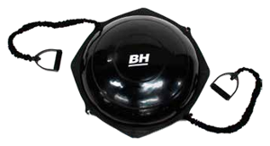 | 0.6 | 0.3 | cualquiera | No | Bajo | funcional | rehabilitación | salud general | core | equilibrio | Bajo | Princ/Interm/Avanz | Doméstica intensiva | 150 | Complementario | IR97510, VF97660 |
38 | ||||||||||||||||||||||||
39 | TOTAL estimado | 42,268 € |